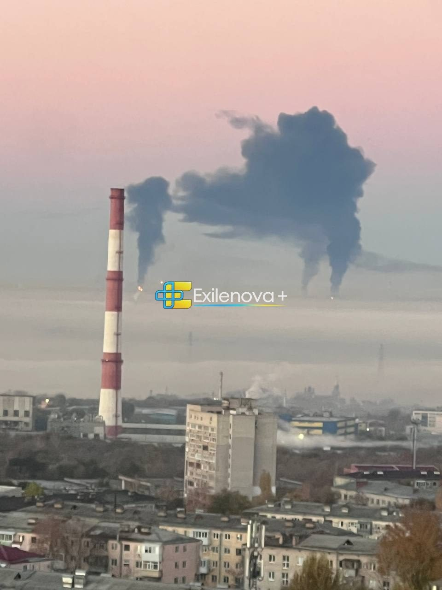

Världen
Delvis obekräftatUkraina bröt pausen – drönare satte stort ryskt raffinaderi i brand

Ukrainska drönare träffade natten till fredag Rosnefts raffinaderi i Novokujbysjevsk i Samara-regionen, omkring 100 mil in i Ryssland. Det är den första attacken mot ett ryskt raffinaderi sedan den 15 oktober och kom bara timmar efter att Wall Street Journal rapporterat att Kiev pausat sådana anfall under tryck från USA.
Tidigt på fredagsmorgonen började invånare i Novokujbysjevsk, nära Samara vid Volga, lägga upp bilder på tjock svart rök över stadens oljeraffinaderi. Enligt flera konton som följer kriget med öppna källor kom rökpelarna från ett tiotal punkter inne på anläggningen, och ett satellitbaserat värmelarm visade bränder på området. Anläggningen ägs av det statliga oljebolaget Rosneft och kan enligt branschuppgifter som återges i flödet förädla runt 8,3 till 8,8 miljoner ton råolja om året.
Anfallet beskrivs som det första mot ett ryskt raffinaderi sedan den 15 oktober. OSINT-kontot GMI skriver att anläggningen träffades upprepade gånger och troligen kommer att stå still en tid, men någon bekräftad skadebild finns ännu inte. Samma natt ska även en konservfabrik i Brjansk som levererar till den ryska armén ha träffats.
Pausen som varade i två veckor
Det som gör attacken uppmärksammad är tidpunkten. Mindre än ett dygn tidigare hade Wall Street Journal rapporterat att Ukrainas enheter för långdistansanfall i mitten av oktober fått order att avsluta pågående operationer och avstå från nya anfall mot ryska raffinaderier. Enligt tidningens uppgifter, så som de återgetts på X, hade Jared Kushner bett president Zelenskyj om en paus på 30 dagar medan han och Steve Witkoff förhandlar med Moskva. Pausen väntades enligt samma rapportering gälla åtminstone till efter det amerikanska mellanårsvalet den 3 november.
Zelenskyj har enligt återgivningarna sagt att det aldrig fanns någon formell order som förbjöd fler anfall mot raffinaderier. Ukrainska och ukrainavänliga konton pekar dessutom på att Ryssland samma natt anföll raffinaderiet i ukrainska Krementjuk, och beskriver fredagens attack som ett svar på det.
Vad händer nu
För Washington är beskedet obekvämt mitt i försöken att få till en energivapenvila. Analyskontot The Tectonic skriver att Ukrainas raffinaderikampanj i praktiken kan ha återupptagits redan innan pausen hunnit få effekt. Om fler anfall följer de närmaste dagarna, eller om Kiev åter håller igen fram till valet, är fortfarande oklart.
Så vet vi det
Källmix: 9 källor – 2 ögonvittne, 4 analys, 2 journalist, 1 debattör. Etablerad media utgör 0 av 9.
- Ögonvittne Invånare i Novokujbysjevsk: bilder på bränder vid raffinaderiet tidigt på morgonen
- Ögonvittne Video av rökpelarna från staden senare på morgonen
- Journalist Charter 97, belarusisk oppositionssajt: lokala uppgifter om attack och brand
- Analys TheValueist: värmelarm från satellit och fakta om anläggningen
- Analys WW3 Watchtower, OSINT: explosioner, luftvärn och en träffad konservfabrik i Brjansk
- Analys GMI: anläggningen träffades flera gånger och står troligen still en tid
- Analys The Tectonic: WSJ-uppgiften om paus fram till mellanårsvalet
- Journalist WarTranslated om WSJ-uppgifterna kring Kushners begäran
- Debattör ToBeOr: Ryssland träffade Krementjuks raffinaderi samma natt
Att raffinaderiet brann bekräftas av invånarnas bilder och videor och av flera oberoende konton. Hur stora skadorna är och hur länge anläggningen står stilla är obekräftat. Uppgifterna om den amerikanska begäran om paus bygger på Wall Street Journals rapportering så som den återgetts på X; tidningens egen artikel har inte lästs direkt.
Fördjupa
Frågorna öppnar Grok i en ny flik med artikeln som underlag. AI-svar kan innehålla fel, så kontrollera mot källorna.
- Varför är raffinaderier så viktiga mål i kriget mellan Ryssland och Ukraina? ↗
- Vad var det för "energivapenvila" som USA försökt få till? ↗
- Hur kan ukrainska drönare nå så långt in i Ryssland? ↗
- Vad betyder Novokujbysjevsk-raffinaderiet för Rysslands bränsleförsörjning? ↗
- Hur påverkar det amerikanska mellanårsvalet USA:s linje i kriget? ↗
Läs vidare
Uppdateringslogg
- 07:25 – Artikeln publicerad.